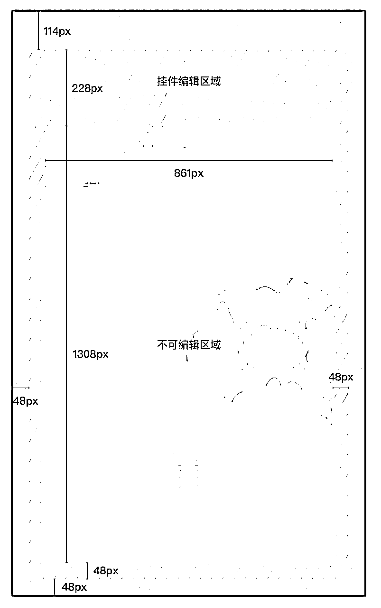
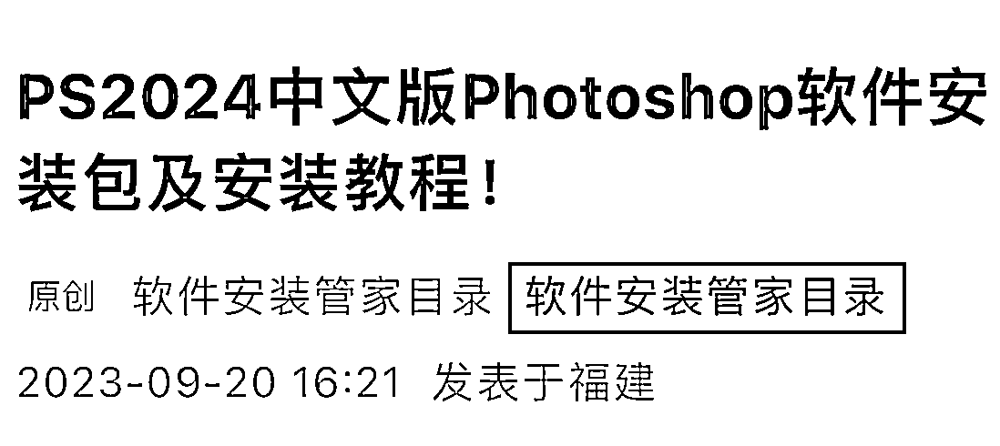

来源：https://ys5n5rzrv4.feishu.cn/docx/V8w8dL9PooExbexgO0IchUpEnlc
我是霞曦子
4年资深设计师、插画师
定位：擅长视觉营销
可提供：表情包、产品/社群宣传海报、企业红包封面、文创周边等定制设计
红包封面如何自己做，目前也是部分小伙伴的痛点，曦子这次给大家带来的分享的是：
如何“自制好看的微信红包封面”，包含设计和审核的流程，非常详细，感兴趣的朋友可以耐心看完。
目前我已经设计了7款红包封面，且每一款都通过了审核，涵盖原创、AI、人像3种不同类型风格。
第一款“有钱花”红包封面我送了很多朋友，没想到很受大家喜欢，我发布在视频号，当晚被动加了100+微信号。

第二款“所愿皆所得”这款，我是用来测试的，主要是想尝试看看简单的创作能不能够通过微信审核，如果可以的话，那大家即使没有设计功底，也是可以做出好看的封面的。

第三款、第四款是今年圣诞节的红包封面，非常可爱，主打一个萌系和治愈哈哈。


第五款是一款祈福的封面，寓意2024“有求币应”、财源滚滚。

第六款是AI封面，尝试了这么多原创，总要尝试一下不同的风格创作，AI封面也是相对来说，更适合大家去入手，不需要绘画基础，只需要输入合适的关键词指令就可以。

第七款是人像封面，考虑到有很多小伙伴是做个人IP的，个性化定制不可少，我先自己做一款人像封面出来，后续提取过审核的经验，那大家都可以用自己的人像做一款独特的封面，难度也不高。
给粉丝或亲朋好友发红包的时候，封面上也会有自己的专属印记，也触达更多人群，让大家认识你。


以上这些都是曦子原创通过审核的封面，接下来说一下制作的要求以及审核的细节。
微信红包封面开放平台：cover.weixin.qq.com

cover.weixin.qq.com
建议细看官方的帮助中心，非常详细。
需要提交“商标注册证”作为证明材料

在官网定制主页，选择定制封面-勾选封面故事-勾选添加公众号-添加账号原始ID


可以，但是需要提供“肖像权证明材料”，可以是本人，也可以是自己的小孩或伴侣，使用谁的人像，授权证明材料上就写谁的名字。
可以，提供录屏，或者生成封面的过程证明。
比如我通过的封面，所提供的就是创作过程中的截图，附在文档中。

稿定和可画里面的素材不能随意使用，因为你没有他们的素材使用版权。
但是你可以用稿定或可画进行封面的创作。
可以，但必须证明你有这个版权，提供“版权证明书”，如果你没有去申请版权，也可以提供源文件，创作过程的视频。
可以，动态的一般是你点开红包后，下拉会有一段视频呈现，但你上传的话，有格式和版权要求，视频也必须是原创，或者有版权证明。
需要，微信官方会收取红包封面费用，一元一个封面

他会以邮件的形式告诉你，审核是否通过，且官方平台也会发信息告知你是否通过，如果未通过审核，会告诉你原因。
正常情况下1-3天，如果你添加复杂的文字，比如外文、英文，审核时间会更久。
封面中的内容不能包含营销相关的，比如产品或服务，只能是你的主体名称、祝福语、或者价值观。


不建议，异形的需要调整尺寸和设计，如果不太会操作ps软件，你不好调整挂件和气泡的设计。
要做也可以，去官方下载异形的创作模板，注意内容尺寸不要超出模版的界线。


红包封面，一般有这四种形式：
🧰使用工具：mj/sd+调整尺寸的工具+录屏软件
录屏软件目前绝大多数都是收费的，我目前也没有找到免费的，我自己在淘宝买了个30元终身使用的，叫《嗨格式录屏大师》
录屏大师软件免费下载_高清电脑屏幕录像专家级工具_嗨格式录屏大师
AI如何生成图片，这里就不过多赘述，大家可以去各个平台搜索，都能找到。
文字部分你可以用word像以下截图这样写，图片就是你生成的过程证明。

图片中的版权声明的链接是你使用的AI软件的版权申明介绍官网，复制过来即可。
比如我使用的是山鲸AI，则复制官方对版权说明的网址链接附在文档中。


这种不需要你再设计，但需要你提供图片的版权证明，然后把这个图导出4个不同尺寸（与AI生成微信红包封面第2步相同）

1）图中人物与监护人的关系证明，如户口本/出生证明/户籍证明等扫描件；
2）肖像权授权书。其中授权人为图中涉及肖像人物的监护人，被授权人为微信红包封面开放平台注册者


🧰使用工具：绘画工具（电脑：ps+录屏软件）（ipad：procteate）
ps安装包可以微信框搜索“ps安装包”或者“软件安装目录”可以找到安装包和教程。

如果你是画插画，需要考虑这几个关键要素：
构图：常见的构图形式有水平构图、中心构图、三角构图、黄金构图等
配色：尽量使用比较鲜亮的颜色，色系不超过3个
形状：简约、干净、耐看，有层次有对比
质感：可以适当添加肌理
字体：尽量使用手绘字体，以免选择有版权的字体，导致审核不通过

比如导出拆红包页相应的尺寸：黄色方框里不同的组代表（拆红包页、红包气泡、红包详情页、封面故事页、发红包页）的效果图，每个组里都有一个可以双击替换的图层，双击进入，就是源文件，然后选择文件导出对应的尺寸大小即可。

⬆️上图所说，双击进去，会跳转到⬇️封面源文件，选择文件-导出-导出为

⬇️这是导出尺寸大小设置的弹框

替换导出其他组的的图也是同样操作。